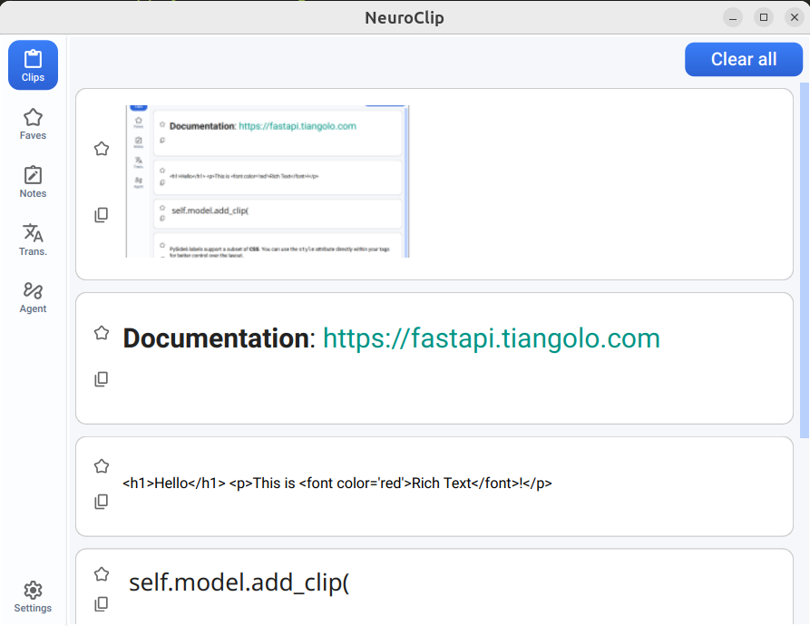
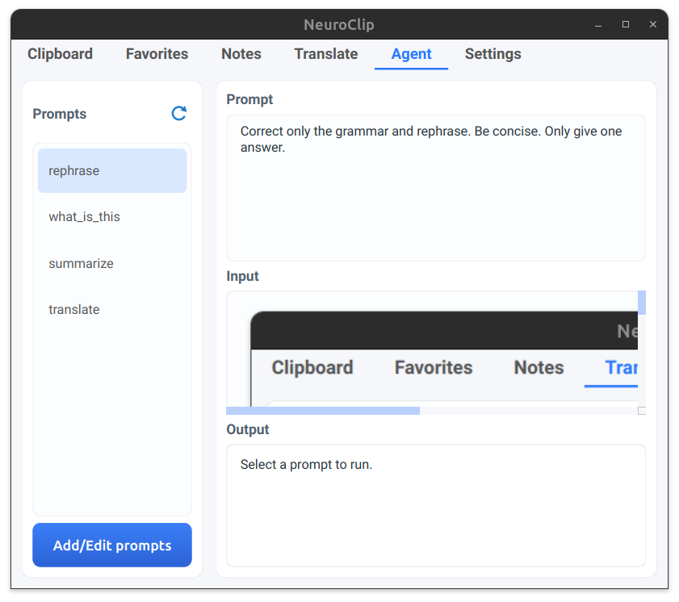
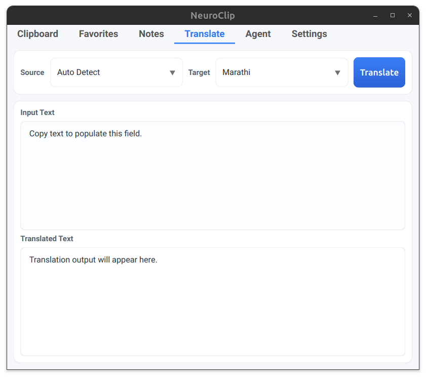
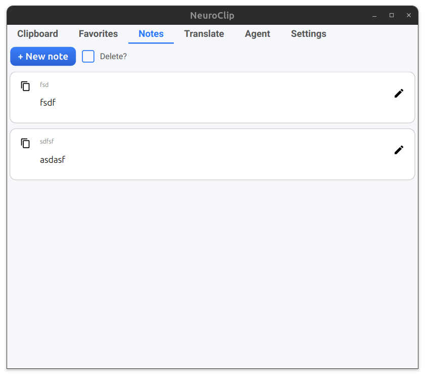
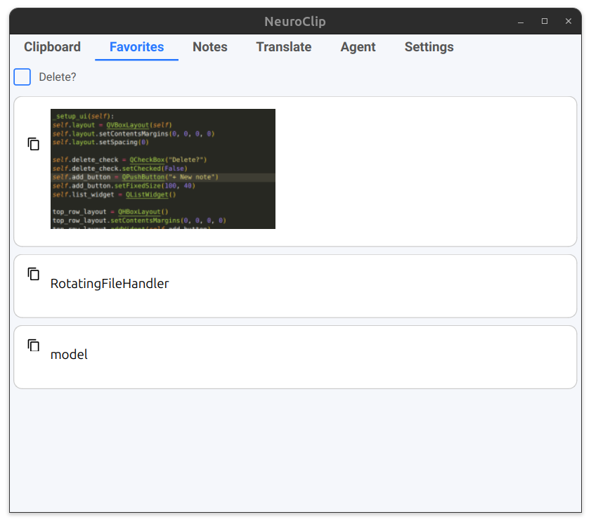
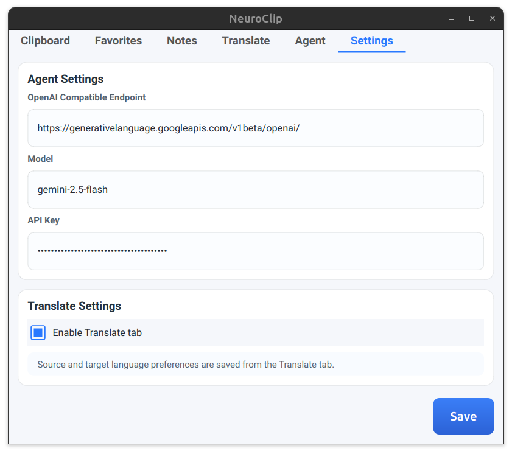

ClipLM captures everything you copy — and turns it into something you can actually use. History, snippets, translation, and AI in one compact tool.
Free. Works offline. No account needed.

Maintain a personal library of reusable AI prompts. Whether you need to summarize an article, rewrite a draft, classify data, or extract components from an image, it all runs directly against whatever is currently stored in your clipboard.

A dedicated native translation workspace that leverages your clipboard. The text you copy flows automatically into the input field. Pick your language pairing, click once, and pull the translated output directly to your cursor.

A built-in lightweight scratchpad for the information that should outlive the fast pace of your clipboard. Take manual notes with distinct titles and formatted bodies, ensuring your ideas are never further than a hotkey away.

Protect important content from getting washed away by an overflowing clipboard history. Simply "star" any item to instantly push it into your permanent Favorites list. Boilerplates are always right where you left them.

ClipLM believes in keeping your active workspace private and giving you the power to choose what powers your tools. Turn workflow capabilities on or off as needed, securely on your own filesystem.

ClipLM is free to download. Works on macOS and Windows. No account, no telemetry, no lock-in.
macOS 12+ · Windows 10+ · MIT License